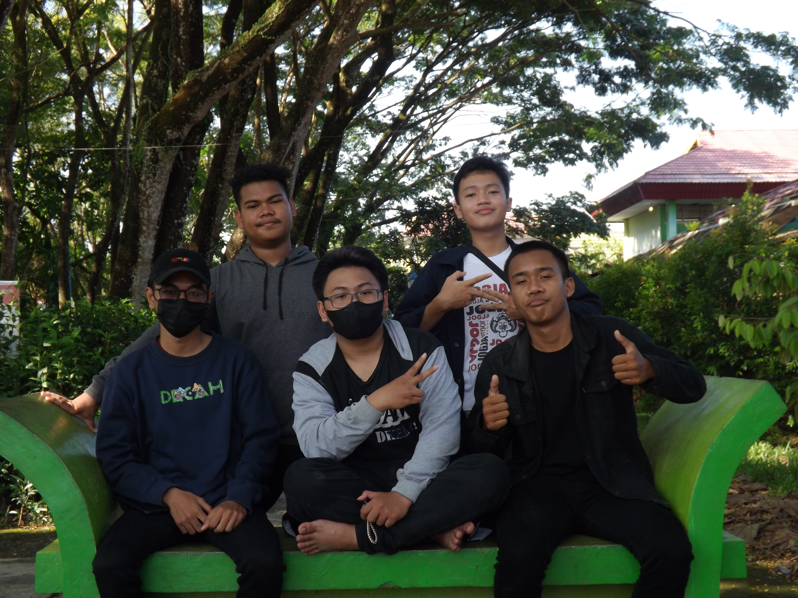
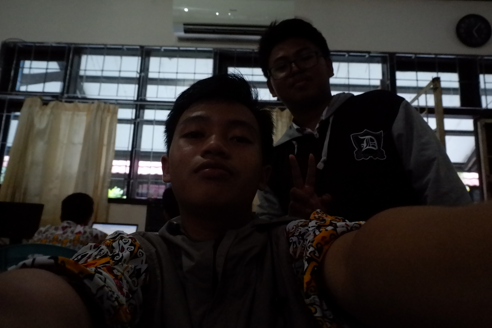
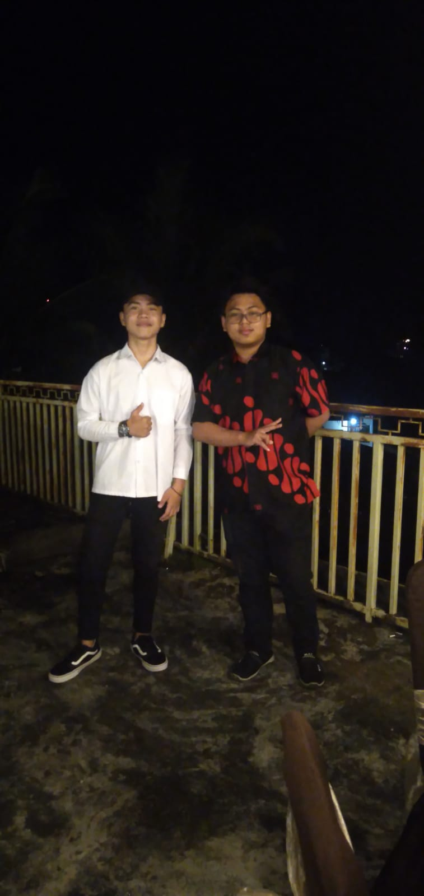
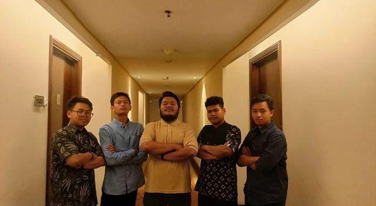

Halaman Kontak Saya
Mari Terhubung
Silakan hubungi saya melalui beberapa platform berikut. Semua tautan bisa Anda sesuaikan kembali dengan akun aktif milik Anda.
Informasi Tambahan
- Nama: Richardo Reksi Ratag
- Tempat Lahir: Tanah Grogot
- Tanggal Lahir: 10 April 2006
- Pendidikan: Mahasiswa Pendidikan Komputer
- Fakultas: FKIP Universitas Mulawarman
Arah Pengembangan
Saya tertarik pada web development, jaringan komputer, serta cyber security dasar. Halaman ini digunakan untuk mempermudah komunikasi terkait tugas, kolaborasi, atau diskusi pembelajaran.


Galeri Kontak
Foto Pribadi Tambahan


